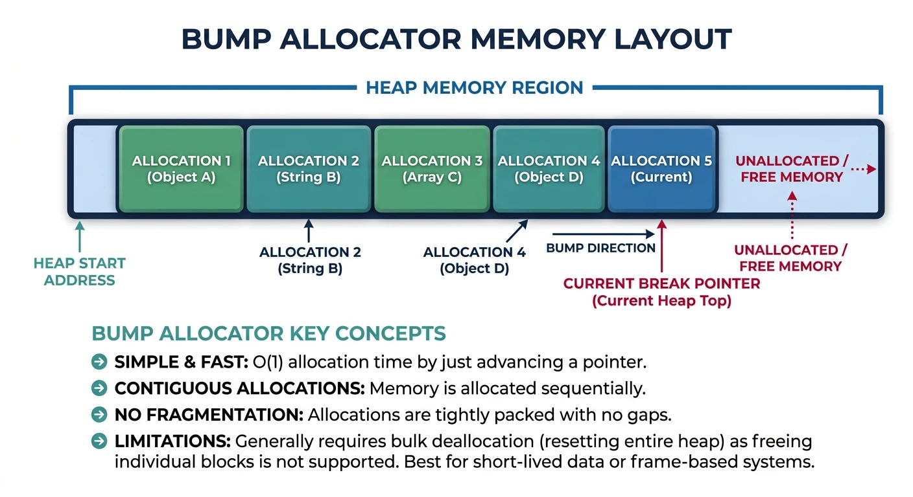
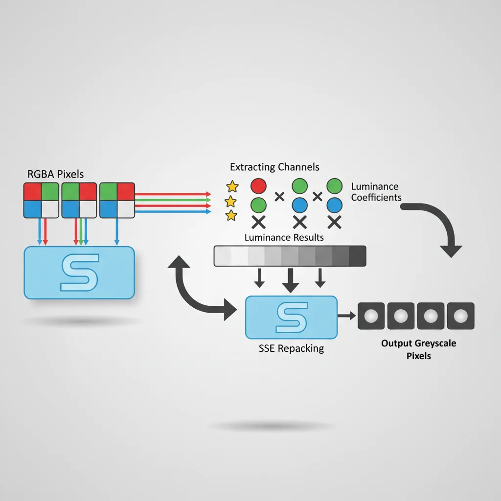
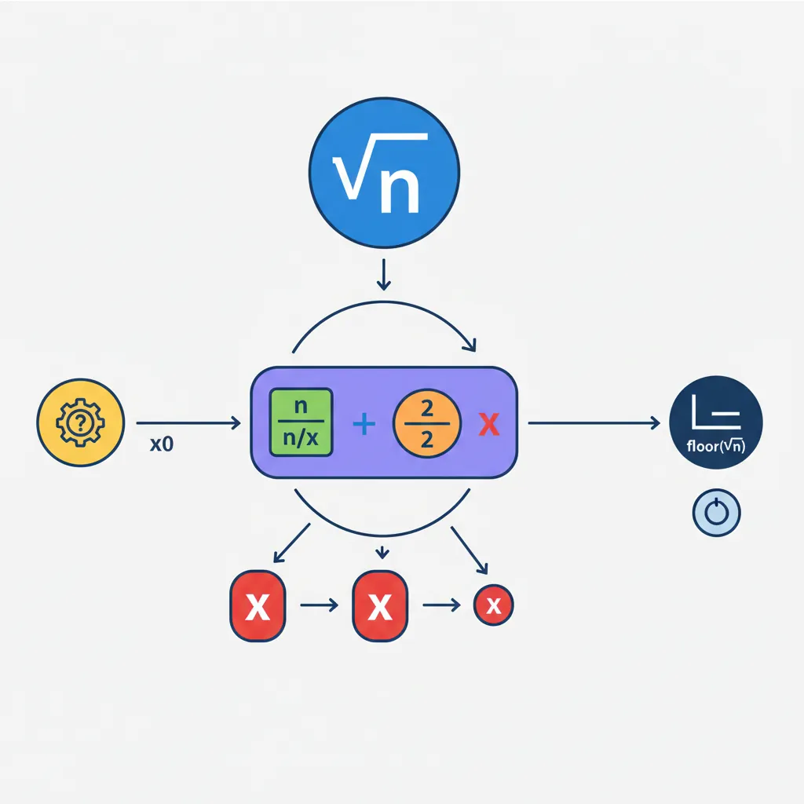

A bump allocator is the simplest dynamic memory allocator—it just keeps incrementing a pointer. Think of it like a notepad: you keep writing at the next available line, never erasing.

Figure: Bump allocator layout – sequential allocations advance a pointer through the heap, with brk syscall expanding available memory.
Limitation: Bump allocators can't free individual allocations. Use alloc_reset() to free everything at once—perfect for arena/pool-style memory management.
Project 3: XOR Encryption
; XOR cipher - encrypt/decrypt buffer
; Input: RDI = buffer, RSI = length, RDX = key (single byte)
global xor_cipher
xor_cipher:
test rsi, rsi
jz .done
movzx eax, dl ; Key byte in AL
.loop:
xor [rdi], al ; XOR byte with key
inc rdi
dec rsi
jnz .loop
.done:
ret
Link with C: gcc main.c xor_cipher.o -o cipher_demo
Project 4: Image Grayscale
Convert RGB images to grayscale using SIMD. The standard formula is: Gray = 0.299*R + 0.587*G + 0.114*B

Figure: SIMD grayscale pipeline – SSE processes 4 RGBA pixels simultaneously by extracting channels, multiplying by luminance coefficients, and repacking results.
RGB Pixel Format (24-bit):
┌─────┬─────┬─────┐
│ R │ G │ B │ x 4 pixels = 12 bytes
└─────┴─────┴─────┘
RGBA Pixel Format (32-bit) - easier for SIMD:
┌─────┬─────┬─────┬─────┐
│ R │ G │ B │ A │ x 4 pixels = 16 bytes = 1 XMM
└─────┴─────┴─────┴─────┘
section .data
align 16
; Grayscale coefficients (fixed-point: value * 256)
coeff_r: times 16 db 77 ; 0.299 * 256 ≈ 77
coeff_g: times 16 db 150 ; 0.587 * 256 ≈ 150
coeff_b: times 16 db 29 ; 0.114 * 256 ≈ 29
section .text
; void grayscale_sse(uint8_t* pixels, int count)
; Input: RDI = RGBA pixel array, RSI = pixel count
; Output: Modifies pixels in-place (R=G=B=gray, A unchanged)
global grayscale_sse
grayscale_sse:
shr rsi, 2 ; Process 4 pixels per iteration
jz .done
movdqa xmm4, [rel coeff_r]
movdqa xmm5, [rel coeff_g]
movdqa xmm6, [rel coeff_b]
.loop:
; Load 4 RGBA pixels (16 bytes)
movdqu xmm0, [rdi] ; [R0 G0 B0 A0 | R1 G1 B1 A1 | ...]
; Extract R, G, B channels
movdqa xmm1, xmm0 ; Copy for R
movdqa xmm2, xmm0 ; Copy for G
movdqa xmm3, xmm0 ; Copy for B
; Mask to extract each channel (every 4th byte starting at offset)
pand xmm1, [rel mask_r] ; Keep R bytes
pand xmm2, [rel mask_g] ; Keep G bytes
pand xmm3, [rel mask_b] ; Keep B bytes
; Shift G and B to align with R position for calculation
psrld xmm2, 8 ; G >> 8
psrld xmm3, 16 ; B >> 16
; Multiply by coefficients (8-bit)
pmullw xmm1, xmm4 ; R * 77
pmullw xmm2, xmm5 ; G * 150
pmullw xmm3, xmm6 ; B * 29
; Sum and divide by 256 (shift right 8)
paddw xmm1, xmm2
paddw xmm1, xmm3
psrlw xmm1, 8 ; gray = (R*77 + G*150 + B*29) / 256
; Pack gray value to all RGB channels
; Result: [gray gray gray A0 | gray gray gray A1 | ...]
movdqa xmm2, xmm1
pslld xmm1, 8 ; gray << 8 (to G position)
por xmm2, xmm1
pslld xmm1, 8 ; gray << 16 (to B position)
por xmm2, xmm1
pand xmm0, [rel mask_a] ; Keep original alpha
por xmm2, xmm0 ; Combine gray RGB + original A
movdqu [rdi], xmm2 ; Store result
add rdi, 16
dec rsi
jnz .loop
.done:
ret
section .rodata
align 16
mask_r: times 4 dd 0x000000FF
mask_g: times 4 dd 0x0000FF00
mask_b: times 4 dd 0x00FF0000
mask_a: times 4 dd 0xFF000000
Link with C: gcc main.c grayscale_sse.o -o grayscale_demo
Project 5: Math Functions
Fast Integer Square Root
Newton-Raphson method for integer square root—useful in graphics and game dev where floating point is too slow.

Figure: Newton-Raphson isqrt – iterative refinement converges to floor(√n) by repeatedly computing x = (x + n/x) / 2.
; uint32_t isqrt(uint32_t n)
; Input: EDI = n
; Output: EAX = floor(sqrt(n))
global isqrt
isqrt:
test edi, edi
jz .zero ; sqrt(0) = 0
; Initial guess: highest set bit / 2
bsr eax, edi ; Find highest set bit
shr eax, 1 ; Divide position by 2
mov ecx, 1
shl ecx, cl ; Initial guess = 2^(bit_pos/2)
mov eax, ecx
.newton_loop:
; x_new = (x + n/x) / 2
mov edx, edi
xor ecx, ecx
div eax ; EDX:EAX = n / x
add eax, ecx ; x + n/x (ECX held old x)
shr eax, 1 ; / 2
; Check convergence
mov ecx, eax ; Save for next iteration
cmp eax, edx
ja .newton_loop ; Keep iterating if not converged
ret
.zero:
xor eax, eax
ret
; Simpler version using bit manipulation
global isqrt_bit
isqrt_bit:
xor eax, eax ; Result = 0
mov ecx, 1 << 30 ; Start with highest power of 4 <= 2^30
.bit_loop:
test ecx, ecx
jz .done
mov edx, eax
add edx, ecx ; result + bit
cmp edi, edx
jb .shift
sub edi, edx ; n -= (result + bit)
shr eax, 1
add eax, ecx ; result = result/2 + bit
shr ecx, 2 ; bit /= 4
jmp .bit_loop
.shift:
shr eax, 1 ; result /= 2
shr ecx, 2 ; bit /= 4
jmp .bit_loop
.done:
ret
Save & Compile: isqrt.asm
Linuxnasm -f elf64 isqrt.asm -o isqrt.o
macOSnasm -f macho64 isqrt.asm -o isqrt.o
Windowsnasm -f win64 isqrt.asm -o isqrt.obj
Link with C: gcc main.c isqrt.o -o isqrt_demo
Factorial
; uint64_t factorial(uint32_t n)
; Input: EDI = n (max 20 for 64-bit result)
; Output: RAX = n!
global factorial
factorial:
mov eax, 1 ; result = 1
test edi, edi
jz .done ; 0! = 1
cmp edi, 20
ja .overflow ; 21! > 2^64
.loop:
imul rax, rdi ; result *= n
dec edi
jnz .loop
.done:
ret
.overflow:
mov rax, -1 ; Return max value on overflow
ret
; Lookup table version (fastest for small n)
section .rodata
align 8
factorial_table:
dq 1 ; 0!
dq 1 ; 1!
dq 2 ; 2!
dq 6 ; 3!
dq 24 ; 4!
dq 120 ; 5!
dq 720 ; 6!
dq 5040 ; 7!
dq 40320 ; 8!
dq 362880 ; 9!
dq 3628800 ; 10!
; ... up to 20!
section .text
global factorial_lookup
factorial_lookup:
cmp edi, 20
ja .overflow
mov rax, [rel factorial_table + rdi*8]
ret
.overflow:
mov rax, -1
ret